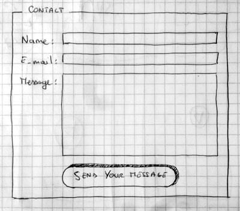
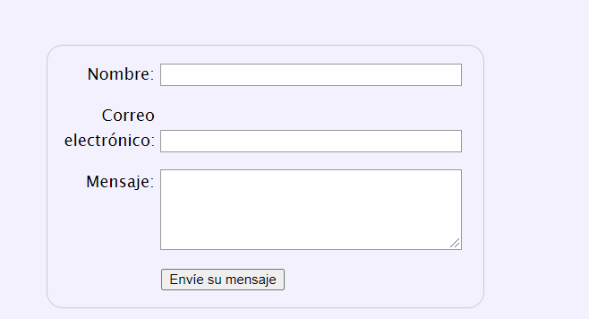

Formularios HTML
¿Qué es un formulario web?

Los formularios web son uno de los principales puntos de interacción entre un usuario y un sitio web o aplicación. Los formularios permiten a los usuarios la introducción de datos, que generalmente se envían a un servidor web para su procesamiento y almacenamiento (consulta Enviar los datos de un formulario más adelante en el módulo), o se usan en el lado del cliente para provocar de alguna manera una actualización inmediata de la interfaz (por ejemplo, se añade otro elemento a una lista, o se muestra u oculta una función de interfaz de usuario).
El HTML de un formulario web está compuesto por uno o más controles de formulario , además de algunos elementos adicionales que ayudan a estructurar el formulario general; a menudo se los conoce como formularios HTML.
Los controles pueden ser campos de texto de una o varias líneas, cajas desplegables, botones, casillas de verificación o botones de opción, y se crean principalmente con el elemento <input>, aunque hay algunos otros elementos que también hay que conocer.
Los controles de formulario también se pueden programar para forzar la introducción de formatos o valores específicos (validación de formulario), y se combinan con etiquetas de texto que describen su propósito para los usuarios con y sin discapacidad visual.
Diseñar un formulario
Antes de comenzar a escribir código, siempre es mejor dar un paso atrás y tomarte el tiempo necesario para pensar en tu formulario. Diseñar una maqueta rápida te ayudará a definir el conjunto de datos adecuado que deseas pedirle al usuario que introduzca.

A partir de aquí hay que comentar que para dar estilo a los diferentes controles de nuestro formulario, tenemos que tener conocimientos en CSS. CSS será objeto de estudio en el próximo tema. Por ahora crearemos los formularios sin importarnos mucho el estilo con el que se mostrarán.
Implementación del formulario del boceto
Para implementar este primer formulario necesitaremos los siguientes elementos HTML: <form><label><input><textarea><button>.
El elemento <form>
Todos los formularios comienzan con un elemento<form>, como este:
<form action="/ruta-a-quien-gestiona-el-formulario" method="post">
</form>
El atributo action define la ubicación (URL) donde se envían los datos que el formulario ha recopilado cuando se validan.
- Puede ser una página de servidor que va a gestionar los datos introducidos en el formulario. También puede ser un elemento de programación capaz de atender peticiones HTTP, por ejemplo un servlet del lenguaje de programación JAVA.
- El atributo method define con qué método HTTP se envían los datos (generalmente get o post).
Los elementos <label>, <input> y <textarea>
Nuestro formulario de contacto no es complejo: la parte para la entrada de datos contiene tres campos de texto, cada uno con su elemento <label> correspondiente que permite asignar una etiqueta a cada campo.
- El campo de entrada para el nombre es un campo de texto de una sola línea.
- El campo de entrada para el correo electrónico es una entrada de datos de tipo correo electrónico: un campo de texto de una sola línea que acepta solo direcciones de correo electrónico.
- El campo de entrada para el mensaje es <textarea>un campo de texto multilínea.
Escribamos todo el código:
<form action="/ruta-a-quien-gestiona-el-formulario" method="post">
<ul>
<li>
<label for="name">Nombre:</label>
<input type="text" id="name" name="user_name">
</li>
<li>
<label for="mail">Correo electrónico:</label>
<input type="email" id="mail" name="user_mail">
</li>
<li>
<label for="msg">Mensaje:</label>
<textarea id="msg" name="user_message"></textarea>
</li>
</ul>
</form>
Por ahora el aspecto visual no es bueno, las listas que nos han ayudado a que los controles salgan en diferentes lineas, muestran el estilo por defecto del navegador, lo que hace que se muestre un "punto" que no tiene ningún sentido. Pero de eso nos ocuparemos cuando estudiemos CSS. Por ahora nos centramos en el estudio de los diferentes controles que podemos incorporar a un formulario.
Cada control de un formulario contiene un atributo "name". Ese atributo es muy importante porque ese es el nombre que usará la URL que procese el formulario para acceder al valor que el usuario del formulario haya escrito en él. Observarás también que cada control tiene un atributo "id". El atributo id identifica de forma única cada elemento que colocamos en una página. Mediante código Javascript se puede acceder a los elementos de una página a través del identificador.
El atributo "for" conecta la etiqueta <label> con el elemento de control para el que esa etiqueta se muestra.
Observa que la conexión se hace mediante especificando en el atributo for, el identificador del control.
<label for="name">Nombre:</label>
En el elemento <input>, el atributo más importante es type. Define la forma en que el elemento <input> aparece y se comporta.
En nuestro ejemplo sencillo, usamos el valor <input/text>para la primera entrada, el valor predeterminado para este atributo. Representa un campo de texto básico de una sola línea que acepta cualquier tipo de entrada de texto.
Para la segunda entrada, usamos el valor <input/email>, que define un campo de texto de una sola línea que solo acepta una dirección de correo electrónico. Esto convierte un campo de texto básico en una especie de campo «inteligente» que efectúa algunas comprobaciones de validación de los datos que el usuario escribe. También hace que aparezca un diseño de teclado más apropiado para introducir direcciones de correo electrónico (por ejemplo, con un símbolo @ por defecto) en dispositivos con teclados dinámicos, como teléfonos inteligentes.
Por último, pero no por ello menos importante, ten en cuenta la sintaxis de <input> en contraposición con la de <textarea></textarea>. Esta es una de las rarezas del HTML. La etiqueta <input> es un elemento vacío, lo que significa que no necesita una etiqueta de cierre. El elemento <textarea> no es un elemento vacío, lo que significa que debe cerrarse con la etiqueta de cierre adecuada. Esto tiene un impacto en una característica específica de los formularios: el modo en que defines el valor predeterminado. Para definir el valor predeterminado de un elemento<input>, debes usar el atributo value de esta manera:
<input type="text"
value="por defecto este elemento se llena con este texto">
Por otro lado, si deseas definir un valor predeterminado para un elemento en contraposición con la de <textarea>, lo colocas entre las etiquetas de apertura y cierre del elemento en contraposición con la de <textarea>, así:
<textarea>
Por defecto, este elemento contiene este texto
</textarea>
El elemento button
El marcado de nuestro formulario está casi completo; solo necesitamos añadir un botón para permitir que el usuario envíe sus datos una vez que haya completado el formulario. Esto se hace con el elemento <button>; añade lo siguiente justo encima de la etiqueta de cierre </ul>:
<li class="button">
<button type="submit">Envíe su mensaje </button>
</li>
El elemento <button> también acepta un atributo de type, que a su vez acepta uno de estos tres valores: submit, reset o button.
- Un clic en un botón submit (el valor predeterminado) envía los datos del formulario a la página web definida por el atributo action del elemento <form>.
- Un clic en un botón reset restablece de inmediato todos los controles de formulario a su valor predeterminado. Desde el punto de vista de UX, esto se considera una mala práctica, por lo que debes evitar usar este tipo de botones a menos que realmente tengas una buena razón para incluirlos.
- Un clic en un botón button no hace... ¡nada! Eso suena tonto, pero es muy útil para crear botones personalizados: puedes definir su función con JavaScript.
Aplicar estilo básico a un formulario
Para ello crea una nueva hoja de estilos "estiloform.css" e introduce en ella las siguientes reglas CSS.
form {
/* Centrar el formulario en la página */
margin: 0 auto;
width: 400px;
/* Esquema del formulario */
padding: 1em;
border: 1px solid #CCC;
border-radius: 1em;
}
ul {
list-style: none;
padding: 0;
margin: 0;
}
form li + li {
margin-top: 1em;
}
label {
/* Tamaño y alineación uniforme */
display: inline-block;
width: 90px;
text-align: right;
}
input,
textarea {
/* Para asegurarse de que todos los campos de texto tienen la misma
configuración de letra. Por defecto, las áreas de texto tienen
un tipo de letra monoespaciada
*/
font: 1em sans-serif;
/* Tamaño uniforme del campo de texto */
width: 300px;
box-sizing: border-box;
/* Hacer coincidir los bordes del campo del formulario */
border: 1px solid #999;
}
input:focus,
textarea:focus {
/* Destacado adicional para elementos que tienen el cursor */
border-color: #000;
}
textarea {
/* Alinear los campos de texto multilínea con sus etiquetas */
vertical-align: top;
/* Proporcionar espacio para escribir texto */
height: 5em;
}
.button {
/* Alinear los botones con los campos de texto */
padding-left: 90px; /* mismo tamaño que los elementos de la etiqueta */
}
button {
/* Este margen adicional representa aproximadamente el mismo espacio
que el espacio entre las etiquetas y sus campos de texto */
margin-left: .5em;
}
No te preocupes si ahora no las entiendes, ya las estudiaremos en el capítulo dedicado a CSS.
Enlaza a continuación la hoja de estilos recien creada, y observa como se muestra ahora el formulario. Deberias verlo así:

Cómo estructurar un formulario HTML
El uso de una estructura correcta al crear un formulario HTML te ayudará a garantizar que el formulario presente las características de usabilidad y accesibilidad adecuadas.
Un formulario, como vimos en el apartado anterior, comienza con la etiqueta <form>. El resto de controles deben ir anidados dentro de esta etiqueta.
Los elementos <fieldset> y <legend>
El elemento <fieldset> es una forma cómoda de crear grupos de controles de formulario que comparten el mismo propósito, con fines semánticos y de aplicación de estilo. Puedes etiquetar un elemento <fieldset> incluyendo un elemento <legend> justo debajo de la etiqueta de apertura <fieldset>. El contenido textual del elemento <legend> describe formalmente el propósito del elemento <fieldset> en el que se incluye.
<form>
<fieldset>
<legend>Tamaño del zumo de fruta </legend>
<p>
<label for="size_1">Pequeño </label>
<input type="radio" name="size" id="size_1" value="pequeño">
</p>
<p>
<label for="size_2">Mediano </label>
<input type="radio" name="size" id="size_2" value="mediano">
</p>
<p>
<label for="size_3">Grande </label>
<input type="radio" name="size" id="size_3" value="grande">
</p>
</fieldset>
</form>
El elemento <label>
Como vimos en el artículo anterior, el elemento <label> es la forma forma de definir una etiqueta para un control de un formulario HTML. Este es el elemento más importante si deseas crear formularios accesibles porque cuando se implementan correctamente, los lectores de pantalla leen la etiqueta de un elemento de formulario junto con las instrucciones relacionadas, y esto además resulta muy útil para los usuarios videntes. Tomemos este ejemplo que vimos en el apartado anterior:
<label for="name">Nombre:</label>
<input type="text" id="name" name="user_name">
Un lector de pantalla leerá algo como «Nombre, editar texto». Otra ventaja de configurar correctamente las etiquetas es que puedes hacer clic o pulsar en la etiqueta para activar el control de formulario correspondiente. Puedes probar esta funcionalidad con el formulario anterior. Pulsa en las etiquetas y verás como se marca el botón de radio correspondiente.
Estructuras HTML comunes que se utilizan en los formularios
Puedes usar todo el poder del HTML para estructurar un formulario web.
Como has visto en los ejemplos anteriores, es una práctica común delimitar una etiqueta y su control de formulario con un elemento <li> dentro de una lista <ul> o<ol>. Los elementos <p> y <div> también se usan con frecuencia. Se recomiendan las listas para estructurar múltiples casillas de verificación o botones de opción.
Además del elemento <fieldset>, también es una práctica común usar títulos HTML (por ejemplo, <h1>, <h2>), y seccionar (por ejemplo,<section>,), para estructurar formas complejas.
Depende de ti, sobre todo, encontrar un estilo de codificación cómodo que dé como resultado formularios con buena accesibilidad y usabilidad. Las secciones independientes con funciones diferentes deben estar contenidas en elementos <section>separados, con elementos <fieldset> para contener botones de opción.
Práctica: Construir una estructura de formulario
Como ejercicio vamos a enlazar en esta página el formulario de pago que propone MDN es su tutorial.
Este formulario contendrá una serie de elementos de control que quizás aún no comprendas. No te preocupes por esto por ahora; en el apartado siguiente descubrirás cómo funcionan los controles básicos de un formulario.
Por ahora, lee con detenimiento las descripciones y sigue las instrucciones, y empieza a formarte una idea de qué elementos de delimitación se utilizan para estructurar el formulario y por qué.
Para comenzar, descarga el archivo CSS del formulario que permitirá que el formulario se muestre con un cierto diseño del repositorio de github.
Guarda la hoja de estilos recién descargada en la carpeta css.
A continuación crea una página nueva y enlálaza con la hoja de estilos que has descargado en el paso anterior.
Sigue las instrucciones del tutorial de MDN y construye el formulario. Una vez creado crea un hipervínculo para enlazarlo.
Pulsa para ver el resultado
Controles de formulario originales
En esta sección en particular, veremos el conjunto original de controles de formulario, disponible en todos los navegadores desde los primeros días de la web.
Algunos de ellos ya los hemos usado en la práctica anterior.
Campos de entrada de texto
Los campos de texto <input> son los controles de formulario más básicos. Son un modo muy cómodo de permitir al usuario introducir cualquier tipo de datos, y ya hemos visto algunos ejemplos sencillos.
Todos los controles de texto básicos comparten algunos comportamientos comunes:
- Se pueden marcar como readonly (el usuario no puede modificar el valor de entrada, pero este se envía con el resto de los datos del formulario) o disabled (el valor de entrada no se puede modificar y nunca se envía con el resto de los datos del formulario).
- Pueden tener un placeholder; se trata de un texto que aparece dentro de la caja de entrada de texto y que se usa para describir brevemente el propósito de la caja de texto.
- Pueden presentar una limitación de tamaño (el tamaño físico de la caja de texto, atributo size) y de la extensión máxima (el número máximo de caracteres que se pueden poner en la caja de texto, atributo maxlength).
- Admiten corrección ortográfica (utilizando el atributo spellcheck si el navegador la admite.
<input type="text" id="comentario"
name="comentario" value="Campo de texto, valor por defecto">
Campo de contraseña
Usado para recibir las contraseñas de un usuario. Oculta el valor que se introduce en el campo (por ejemplo, con puntos o asteriscos) para impedir que otros puedan leerlo.
Ejemplo de uso:
<input type="password" id="pwd" name="pwd">
Ten en cuenta que esto es solo una función de interfaz de usuario; a menos que envíes tu formulario en modo seguro, se enviará como texto plano, lo que es malo desde el punto de vista de la seguridad porque alguien con malas intenciones podría interceptar tus datos y robar tus contraseñas, datos de tarjetas de crédito o cualquier otra cosa que hayas enviado. La mejor manera de proteger a los usuarios de esto es alojar cualquier página que contenga formularios en una ubicación de conexión segura (es decir, en una dirección https://), de modo que los datos se cifren antes de enviarse.
Contenido oculto
Otro control de texto original es el tipo de entrada hidden. Se usa para crear un control de formulario que es invisible para el usuario, pero que aun así se envía al servidor junto con el resto de los datos del formulario una vez se transmiten; por ejemplo, es muy normal en la programación de aplicciones web, usar campos ocultos para pasar la operación a realizar con los datos del formulario que se envía. Al estar oculto, el usuario no puede ver ni editar su valor intencionadamente, el control nunca recibirá el foco y un lector de pantalla tampoco lo detectará.
Ejemplo de uso:
<input type="hidden" id="operacion"
name="operacion" value="registrarnuevosocio">
Elementos de selección: casillas de verificación y botones de opción
Los elementos de selección (o checkable items, en inglés) son controles cuyo estado puede cambiar cuando se hace clic en ellos o en sus etiquetas asociadas. Hay dos tipos de elementos de selección: las casillas de verificación (o check boxes) y los botones de opción (o radio buttons). Ambos usan el atributo checked para indicar si el control de formulario está seleccionado por defecto o no.
Vale la pena señalar que estos controles no se comportan exactamente como otros controles de formulario. Para la mayoría de los controles de formulario, cuando se envía el formulario, se envían todos los controles que tienen un atributo name, incluso si en ellos no se ha introducido ningún valor. En el caso de elementos de selección, sus valores se envían solo si están seleccionados. Si no están seleccionados, no se envía nada, ni siquiera su nombre. Si están seleccionados pero no tienen ningún valor asignado, el nombre se envía con el valor on.
Para una usabilidad/accesibilidad óptima, te recomendamos delimitar cada lista de elementos que estén relacionados entre sí dentro de un elemento<fieldset> con un elemento <legend> que proporcione una descripción general de la lista. Cada par individual de elementos <label/input> ha de estar contenido en un elemento de lista propio (o similar). El elemento <label> asociado se coloca en general inmediatamente después del botón de opción o la casilla de verificación, con las instrucciones para el grupo de botones de opción o casillas de verificación, que suelen ser el contenido del elemento <legend>. Observa las estructuras de ejemplo en los ejemplos asociados anteriores.
Puedes consultar un ejemplo de confección de una página que contiene un grupo de casillas de verificación y un grupo de botones de radio. El código lo tienes disponible aqui o lo puedes ver en vivo
Casillas de verificación
Las casillas de verificación se crean estableciendo el atributo type del elemento <input> en el valor checkbox.
<input type="checkbox"
id="zanahoria"
name="vegetales"
value="zanahoria" checked>
Al incluir el atributo checked, la casilla de verificación se marca automáticamente cuando se carga la página. Al hacer clic en la casilla de verificación o en su etiqueta asociada, la casilla de verificación se activa o desactiva.
Las casillas de verificación normalmente se usan como elementos de selección múltiple, de forma que el usuario puede marcar varias de las opciones que se le presentan. En ese caso, cada casilla se crea con el mismo atributo "name" y diferentes valor para los atributos "id" y "value".
<input type="checkbox"
id="zanahoria"
name="vegetales"
value="zanahoria" checked>
<input type="checkbox"
id="coliflor"
name="vegetales"
value="coliflor" checked>
El elemento que procesa el formulario, accede a los vegetales que han sido marcados, leyendo solamente el nombre que comparten todos ellos "vegetales".
Procesando el formulario desde un servlet de Java escribiríamos lo siguiente para acceder al valor de los vegetales que marcó un usuario:
String []vegetalesmarcados=request.getParameter("vegetales");
Y en vegetalesmarcados se almacenarían los valores de todos los vegetales que marcara un usuario. Para el ejemplo, vegetalesmarcados contendría los valores: {"zanahoria","coliflor"}
Recuerda que solo se envía el que esté marcado.
Botones de radio
Un botón de opción se crea estableciendo el atributo type del elemento <input> en el valor radio:
<input type="radio" id="sopa" name="comida" value="sopa" checked>
Es posible asociar diversos botones de opción. Si comparten el mismo valor de atributo name, se considera que están en el mismo grupo de botones. Solo un botón dentro de un grupo puede estar activado en cada momento.
<input type="radio" id="sopa" name="comida" value="sopa" checked>
<input type="radio" id="paella" name="comida" value="paella">
<input type="radio" id="fabada" name="comida" value="fabada">
El codigo anterior muestra tres botones de radio que pertenecen al mismo grupo, porque todos tienen el mismo atributo "name".
Como ves, solo uno de ellos puede tener el valor checked. Si lo escribieras en más de uno, solo aparecería marcado el último de ellos.
Cuando se envía el formulario que contiene ese grupo de botones, solo se envía el valor del botón seleccionado.
De nuevo, si procesamos el formulario desde un servlet de Java escribiríamos lo siguiente para acceder al valor la comida seleccionada
String comidafavorita=request.getParameter("comida");
Y en la variable comidafavorita se guardaría el valor del atributo "value" del botón que seleccione el usuario. Si el usuario hubiese marcado el botón con el valor "paella", la variable comidafavorita guardaría el valor paella.
Listas de selección (desplegables)
Estos controles permiten que un usuario seleccione de entre varias opciones que se le presentan mediante un control que ocupa poco espacion en pantalla.
Listas de selección simple
Podemos crear una lista de selección simple mediante el elemento <select> junto con uno o más elementos <option> como elementos anidados. Estos elementos representan los posibles valores a seleccionar.
Ejemplo:
<select id="simple" name="simple">
<option>Banana </option>
<option selected>Cherry </option>
<option>Lemon </option>
</select>
Visualmente se vería así:
El elemento Cherry es el que aparece seleccionado por defecto porque tiene asociado el atributo selected.
Uso del atributo value
Si un elemento <option> tiene el atributo value establecido en él, ese valor es el que se enviará cuando el formulario sea eviado. Si este atributo se omite, el mismo contenido del elemento <option>
Listas de selección múltiple
Por defecto, un lista de selección solo permite seleccionar un valor. Si añadimos el atributo multiple al elemento <select>, permitiremos que los usuarios puedan seleccionar varios valores mediante el mecanismo que proporciona el sistema operativo. La forma habitual es marcar varios con la tecla ctrl- y haciendo click en los valores que queramos seleccionar.
La mísma lista anterior la podemos codificar como lista múltiple asi:
<select id="multiple" name="multiple" multiple size="2">
<option>Banana </option>
<option>Cherry </option>
<option>Lemon </option>
</select>
Se mostraría así:
Listas de autocompletado
Orientadas a automatizar los valores que podemos introducir en un campo de texto. Para ello usamos el control <datalist>
La forma básica de uso de datalist requiere el atributo ID y elementos option contenidos en datalist (se construye de forma similar al elemento select). El HTML básico sería:
<datalist id="colores">
<option value="Azul"> </option>
<option value="Amarillo"> </option>
<option value="Burdeos"> </option>
<option value="Caoba"> </option>
<option value="Marrón"> </option>
<option value="Naranja"> </option>
<option value="Verde"> </option>
</datalist>
El siguiente paso es asociar el datalist con un input. Esto se consigue estableciendo el atributo LIST en el input deseado con el mismo valor que ID del datalist:
<input list="colores" name="colores" type="text">
Si creas un formulario con los dos controles, tendría este aspecto:
Botones
Hay tres tipos del elemento input que producen botones:
- submit: Produce el envío de los datos del formulario. Para los elementos <button>, omitir el atributo type (o introducir un valor de tipo no válido) da como resultado un botón de envío (submit).
- reset: Establece todos los controles del formulario a sus valores por defecto.
- button: No tiene funcionalidad automática definida. La acción a llevar a cabo se codifica mediante el lenguaje Javascript.
Submit
<button type="submit">boton submit </button>
<input type="submit" value="boton submit">
Reset
<button type="reset">boton reset
</button>
<input type="reset" value="botón reset">
Botón programable
<button type="button">boton programable
</button>
<input type="button" value="boton programable">
Boton de imagen
El control botón de imagen se muestra exactamente como un elemento <img>, excepto que cuando el usuario hace clic en él, se comporta como un botón de envío.
<input type="image"
alt="¡Púlsame!" src="resources/img/botones/enviar.png" width="300">
Selector de archivos
El envío de archivos mediante un formulario es un caso especial.
Si queremos enviar archivos desde un formulario necesitamos realizar los siguientes pasos:
- Establecer el valor del atributo method a POST porque el contenido del archivo no se puede poner dentro de los parámetros de URL.
- Establecer el valor del atributo enctype en multipart/form-data debido a que los datos se dividen en múltiples partes, una para cada archivo más uno para los datos de texto incluidos en el cuerpo del formulario (si también se introduce el texto en la formulario).
- Incluir uno o más controles de selección de archivos para permitir a los usuarios seleccionar el archivo (s) que será subido.
Control <input type="file">
Es el control del formulario que permitirá al usuario seleccionar uno o varios archivos para subir al servidor.
Es posible restringir los tipos de archivos que se aceptan utilizando el atributo accept. Además, puedes permitir que el usuario elija más de un archivo añadiendo el atributo multiple.
<input type="file" name="file" id="file" accept="image/*" multiple>
El código del formulario completo que permita el envío de archivos quedaría así:
<form method="post" action="https://www.foo.com" enctype="multipart/form-data">
<div>
<label for="file">Seleccione un archivo</label>
<input type="file" id="file" name="fichero">
</div>
<div>
<button>Subir archivo</button>
</div>
</form>
Y se vería así: